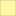

<!doctype html>
<html lang="en">
    <head>
        <meta charset="utf-8">
        <meta http-equiv="X-UA-Compatible" content="IE=edge">
        <meta name="viewport" content="initial-scale=1,user-scalable=no,maximum-scale=1,width=device-width">
        <meta name="mobile-web-app-capable" content="yes">
        <meta name="apple-mobile-web-app-capable" content="yes">
        <link rel="stylesheet" href="css/leaflet.css">
        <link rel="stylesheet" href="css/L.Control.Layers.Tree.css">
        <link rel="stylesheet" href="css/qgis2web.css">
        <link rel="stylesheet" href="css/fontawesome-all.min.css">
        <link rel="stylesheet" href="css/leaflet-control-geocoder.Geocoder.css">
        <style>
        html, body, #map {
            width: 100%;
            height: 100%;
            padding: 0;
            margin: 0;
        }
        </style>
        <title></title>
    </head>
    <body>
        <div id="map">
        </div>
        <script src="js/qgis2web_expressions.js"></script>
        <script src="js/leaflet.js"></script>
        <script src="https://cdn.jsdelivr.net/npm/chart.js"></script>
        <script src="js/L.Control.Layers.Tree.min.js"></script>
        <script src="js/leaflet.rotatedMarker.js"></script>
        <script src="js/leaflet.pattern.js"></script>
        <script src="js/leaflet-hash.js"></script>
        <script src="js/Autolinker.min.js"></script>
        <script src="js/rbush.min.js"></script>
        <script src="js/labelgun.min.js"></script>
        <script src="js/labels.js"></script>
        <script src="js/leaflet-control-geocoder.Geocoder.js"></script>
        <script src="data/MostCommonEPCRating_1.js"></script>
        <script>
        var highlightLayer;
        function highlightFeature(e) {
            highlightLayer = e.target;

            if (e.target.feature.geometry.type === 'LineString' || e.target.feature.geometry.type === 'MultiLineString') {
              highlightLayer.setStyle({
                color: '#ffff00',
              });
            } else {
              highlightLayer.setStyle({
                fillColor: '#ffff00',
                fillOpacity: 0.7
              });
            }
        }
        var map = L.map('map', {
            zoomControl:false, maxZoom:28, minZoom:1
        }).fitBounds([[52.42610829213301,-1.9271531308640573],[52.48200308281707,-1.7466293276780613]]);
        var hash = new L.Hash(map);
        map.attributionControl.setPrefix('<a href="https://github.com/tomchadwin/qgis2web" target="_blank">qgis2web</a> &middot; <a href="https://leafletjs.com" title="A JS library for interactive maps">Leaflet</a> &middot; <a href="https://qgis.org">QGIS</a>');
        var autolinker = new Autolinker({truncate: {length: 30, location: 'smart'}});
        // remove popup's row if "visible-with-data"
        function removeEmptyRowsFromPopupContent(content, feature) {
         var tempDiv = document.createElement('div');
         tempDiv.innerHTML = content;
         var rows = tempDiv.querySelectorAll('tr');
         for (var i = 0; i < rows.length; i++) {
             var td = rows[i].querySelector('td.visible-with-data');
             var key = td ? td.id : '';
             if (td && td.classList.contains('visible-with-data') && feature.properties[key] == null) {
                 rows[i].parentNode.removeChild(rows[i]);
             }
         }
         return tempDiv.innerHTML;
        }
        // add class to format popup if it contains media
		function addClassToPopupIfMedia(content, popup) {
			var tempDiv = document.createElement('div');
			tempDiv.innerHTML = content;
			if (tempDiv.querySelector('td img')) {
				popup._contentNode.classList.add('media');
					// Delay to force the redraw
					setTimeout(function() {
						popup.update();
					}, 10);
			} else {
				popup._contentNode.classList.remove('media');
			}
		}
        var zoomControl = L.control.zoom({
            position: 'topleft'
        }).addTo(map);
        var bounds_group = new L.featureGroup([]);
        function setBounds() {
        }
        map.createPane('pane_OpenStreetMap_0');
        map.getPane('pane_OpenStreetMap_0').style.zIndex = 400;
        var layer_OpenStreetMap_0 = L.tileLayer('https://tile.openstreetmap.org/{z}/{x}/{y}.png', {
            pane: 'pane_OpenStreetMap_0',
            opacity: 1.0,
            attribution: '',
            minZoom: 1,
            maxZoom: 28,
            minNativeZoom: 0,
            maxNativeZoom: 19
        });
        layer_OpenStreetMap_0;
        map.addLayer(layer_OpenStreetMap_0);
        function pop_MostCommonEPCRating_1(feature, layer) {
            layer.on({
                mouseout: function(e) {
                    for (var i in e.target._eventParents) {
                        if (typeof e.target._eventParents[i].resetStyle === 'function') {
                            e.target._eventParents[i].resetStyle(e.target);
                        }
                    }
                },
                mouseover: highlightFeature,
            });
            var popupContent = '<table>\
                    <tr>\
                        <th scope="row">OA21CD</th>\
                        <td class="visible-with-data" id="OA21CD">' + (feature.properties['OA21CD'] !== null ? autolinker.link(feature.properties['OA21CD'].toLocaleString()) : '') + '</td>\
                    </tr>\
                    <tr>\
                        <th scope="row">Modal EPC</th>\
                        <td class="visible-with-data" id="Modal EPC">' + (feature.properties['Modal EPC'] !== null ? autolinker.link(feature.properties['Modal EPC'].toLocaleString()) : '') + '</td>\
                    </tr>\
                </table>\
                <div style="width: 200px; height: 200px;">\
                    <canvas id="myChart"></canvas>\
                </div>';
            var content = removeEmptyRowsFromPopupContent(popupContent, feature);
			layer.on('popupopen', function(e) {
				addClassToPopupIfMedia(content, e.popup);
                        // Initialize the chart when the popup is opened
                var ctx = document.getElementById('myChart').getContext('2d');
    
                // Example data for the pie chart (you can customize this based on feature properties)
                var chartData = {
                    type: 'pie',
                    data: {
                        labels: ['A', 'B', 'C', 'D', 'E', 'F', 'G', 'No EPC'],
                        datasets: [{
                            data: [
                                feature.properties['A'], 
                                feature.properties['B'],
                                feature.properties['C'], 
                                feature.properties['D'],
                                feature.properties['E'], 
                                feature.properties['F'],
                                feature.properties['G'], 
                                feature.properties['No EPC']
                            ],
                            backgroundColor: [
                                'rgba(0, 100, 0, 0.6)',
                                'rgba(51, 160, 44, 0.6)',
                                'rgba(178, 223, 138, 0.6)',
                                'rgba(255, 243, 128, 0.6)',
                                'rgba(255, 127, 0, 0.6)',
                                'rgba(255, 0, 0, 0.6)',
                                'rgba(139, 0, 0, 0.6)',
                                'rgba(128, 128, 128, 0.6)'
                            ]
                        }]
                    },
                    options: {
                       responsive: true,
                       maintainAspectRatio: false
                    }
                };

                // Render the chart
                new Chart(ctx, chartData);
			});
			layer.bindPopup(content, { maxHeight: 400 });
        }

        function style_MostCommonEPCRating_1_0(feature) {
            switch(String(feature.properties['Modal EPC'])) {
                case 'B':
                    return {
                pane: 'pane_MostCommonEPCRating_1',
                opacity: 0.7,
                color: 'rgba(35,35,35,1.0)',
                dashArray: '',
                lineCap: 'butt',
                lineJoin: 'miter',
                weight: 1, 
                fill: true,
                fillOpacity: 0.7,
                fillColor: 'rgba(51,160,44,1.0)',
                interactive: true,
            }
                    break;
                case 'C':
                    return {
                pane: 'pane_MostCommonEPCRating_1',
                opacity: 0.7,
                color: 'rgba(35,35,35,1.0)',
                dashArray: '',
                lineCap: 'butt',
                lineJoin: 'miter',
                weight: 1, 
                fill: true,
                fillOpacity: 0.7,
                fillColor: 'rgba(178,223,138,1.0)',
                interactive: true,
            }
                    break;
                case 'D':
                    return {
                pane: 'pane_MostCommonEPCRating_1',
                opacity: 0.7,
                color: 'rgba(35,35,35,1.0)',
                dashArray: '',
                lineCap: 'butt',
                lineJoin: 'miter',
                weight: 1, 
                fill: true,
                fillOpacity: 0.7,
                fillColor: 'rgba(255,243,128,1.0)',
                interactive: true,
            }
                    break;
                case 'E':
                    return {
                pane: 'pane_MostCommonEPCRating_1',
                opacity: 0.7,
                color: 'rgba(35,35,35,1.0)',
                dashArray: '',
                lineCap: 'butt',
                lineJoin: 'miter',
                weight: 1, 
                fill: true,
                fillOpacity: 0.7,
                fillColor: 'rgba(255,127,0,1.0)',
                interactive: true,
            }
                    break;
                default:
                    return {
                pane: 'pane_MostCommonEPCRating_1',
                opacity: 1,
                color: 'rgba(35,35,35,1.0)',
                dashArray: '',
                lineCap: 'butt',
                lineJoin: 'miter',
                weight: 1, 
                fill: true,
                fillOpacity: 1,
                fillColor: 'rgba(174,123,210,1.0)',
                interactive: true,
            }
                    break;
            }
        }
        map.createPane('pane_MostCommonEPCRating_1');
        map.getPane('pane_MostCommonEPCRating_1').style.zIndex = 401;
        map.getPane('pane_MostCommonEPCRating_1').style['mix-blend-mode'] = 'normal';
        var layer_MostCommonEPCRating_1 = new L.geoJson(json_MostCommonEPCRating_1, {
            attribution: '',
            interactive: true,
            dataVar: 'json_MostCommonEPCRating_1',
            layerName: 'layer_MostCommonEPCRating_1',
            pane: 'pane_MostCommonEPCRating_1',
            onEachFeature: pop_MostCommonEPCRating_1,
            style: style_MostCommonEPCRating_1_0,
        });
        bounds_group.addLayer(layer_MostCommonEPCRating_1);
        map.addLayer(layer_MostCommonEPCRating_1);
        var osmGeocoder = new L.Control.Geocoder({
            collapsed: true,
            position: 'topleft',
            text: 'Search',
            title: 'Testing'
        }).addTo(map);
        document.getElementsByClassName('leaflet-control-geocoder-icon')[0]
        .className += ' fa fa-search';
        document.getElementsByClassName('leaflet-control-geocoder-icon')[0]
        .title += 'Search for a place';
        var baseMaps = {};
        var overlaysTree = [
            {label: 'Most Common EPC Rating<br /><table><tr><td style="text-align: center;"></td><td>B</td></tr><tr><td style="text-align: center;"></td><td>C</td></tr><tr><td style="text-align: center;"></td><td>D</td></tr><tr><td style="text-align: center;"></td><td>E</td></tr><tr><td style="text-align: center;"></td><td></td></tr></table>', layer: layer_MostCommonEPCRating_1},
            {label: "OpenStreetMap", layer: layer_OpenStreetMap_0},]
        var lay = L.control.layers.tree(null, overlaysTree,{
            //namedToggle: true,
            //selectorBack: false,
            //closedSymbol: '&#8862; &#x1f5c0;',
            //openedSymbol: '&#8863; &#x1f5c1;',
            //collapseAll: 'Collapse all',
            //expandAll: 'Expand all',
            collapsed: true,
        });
        lay.addTo(map);
        setBounds();
        </script>
    </body>
</html>
